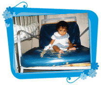

| Inicio | Objetivo | Voluntarias en el Hospital | Talleres | Eventos | Fotos | Grupo de Voluntarias | Colaboraciones |

|
El objetivo de la Asociación, es asistir, tanto desde el punto de vista afectivo, apoyándo en esos momentos difíciles, como también en lo material, a aquellas personas que concurren al Hospital Pereira Rossell para recibir atención médica desde todos los puntos del país. El área donde se colabora es en el de Pediatría que abarca niños de 0 a 14 años. En su gran mayoría, son personas carenciadas que concurren en muchas ocasiones solo con la ropa que tienen puesta, a veces por la urgencia del caso y a veces por no disponer de mucho más para traer, para su corta o larga estadía según el caso. En algunos casos tampoco cuentan con familias que puedan alcanzarles lo necesario de sus hogares, aunque sean de Montevideo, porque no lo tienen, y si lo tienen muchas veces tienen que quedarse al cuidado de los otros niños del núcleo familiar. Para los que son del interior del país todo esto se torna bastante más difícil. |
| voluntariasdelpereira.org.uy ® 2006 - All rights reserved. |